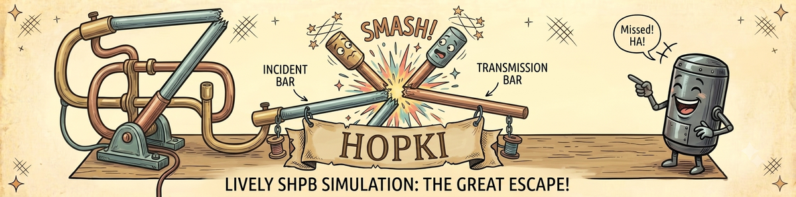

Hopki User Guide¶
Hopki analyzes split Hopkinson, also called Kolsky bar, experiments. It takes incident and transmitted gauge signals, applies the same processing stages as the legacy MATLAB twobar_g workflow, and produces corrected pulses, forces, velocities, displacements, strain rate, and engineering and true stress-strain curves.
Use this guide when you want to operate the desktop app rather than inspect the source code. It explains what each tab is for, what each button does, and what each editable parameter means.
The App At A Glance¶
| Tab | Role |
|---|---|
| Analysis | Load an experiment, edit experiment configuration, choose tim_cut, adjust dispersion/alignment settings, inspect the analysis plots, and export results. |
| Explore | Plot any derived quantity against time or true strain, optionally negate axes, and send the displayed curve onward. |
| Curve cleanup | Trim, zero, smooth, scale, shift, toe-correct, or convert a stress-strain curve before saving or plotting. |
| Figures | Combine one or more curves into a publication figure, style curves and axes, and export PNG/PDF plus a reloadable .npz figure file. |
Typical Workflow¶
- Prepare an experiment folder with two signal files and either
hopki.tomlconfiguration or the legacyincid.exp,incid.spec, andDAMP_Ffiles. - Open Hopki and use Load experiment... on the Analysis tab.
- Drag the vertical line in Signals to set the pulse start,
tim_cut. - Verify the editable parameters, especially signal polarity, gauge distances, specimen dimensions, and reflected-pulse alignment.
- Use Export results... if you need MATLAB-style numeric output files.
- Send the true stress-strain curve to Figures, or clean a curve first in Curve cleanup.
Important Concepts¶
tim_cut- The operator-selected pulse start time. In the GUI, it is the vertical draggable line on the Signals plot.
x1andx2- Gauge-to-specimen distances.
x1is gauge 1 to specimen, andx2is specimen to gauge 2. If omitted fromhopki.toml, Hopki estimates them from the signals and flags them for verification. reflect shift- A sample shift applied to the reflected pulse after dispersion correction. It is used to improve force equilibrium.
- Signal polarity
- The incident pulse must be compressive, meaning negative in Hopki's sign convention. If curves look inverted or striker velocity has the wrong sign, use invert signal polarity.
More Detail¶
The legacy single-page overview is still included for historical context. The MkDocs pages are the maintained user-facing guide.
PDF Copy¶
Download a printable copy of this guide: Hopki_User_Guide.pdf.